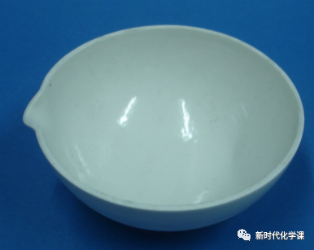
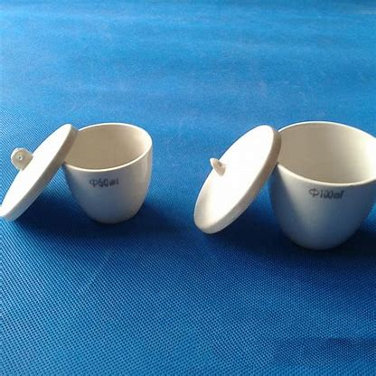
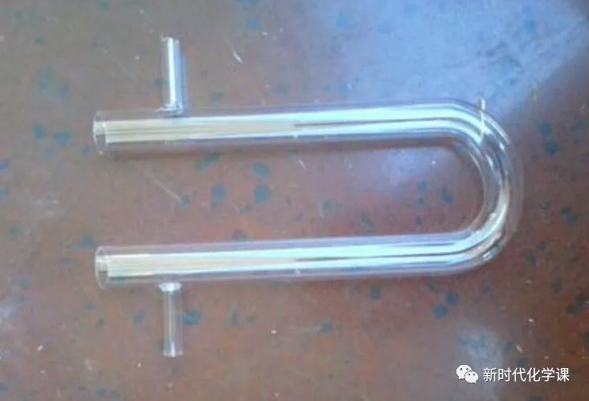
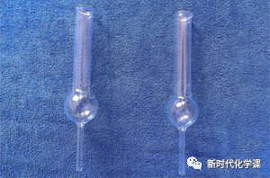

Your browser doesn't support the features required by impress.js, so you are presented with a simplified version of this presentation.
For the best experience please use the latest Chrome, Safari or Firefox browser.
| \(HCl \) | \(HF\) | \(H_2S\) | \(H_2O\) | \(HNO_3\) | \(H_2SO_4\) | |
| 名称（纯物质） | 氯化氢 | 氟化氢 | 硫化氢 | 水 | 硝酸 | 硫酸 |
| 相对分子质量 | 36.5 | 20 | 34 | 18 | 63 | 98 |
| 水溶液名称 | 盐酸 | 氢氟酸 | 氢硫酸 |
Table of Contents, with links to other slides of this same presentation.
Note that instead of absolute positioning we use relative positioning, with the data-rel-x and data-rel-y attributes. This means the step is positioned relative to the foregoing step. In other words, this is equivalent to data-x="0" data-y="-3000".
每日仪器
| 蒸发皿 | 坩埚 | 洗气瓶 |
|  |  | |
| U形管 | 球形干燥管 | |
|  |  |
| \(NaOH \) | \(Ca(OH)_2\) | \(Mg(OH)_2\) | \(Al(OH)_3\) | |
| 名称 | 氢氧化钠 | 氢氧化钙 | 氢氧化镁 | 氢氧化铝 |
| 相对分子质量 | ||||
| 可溶性 |
2.写出Na的物理性质和化学性质
3.写出下列组合的反应现象和反应实质，Na和CuSO4溶液、Na和Fe(OH)3、Na和HCl溶液、Na和稀NaOH溶液，Na和饱和NaOH溶液
4.完成第二节第二课时的学案
5.有能力的完成，第一章习题试卷的5-9题
| \(NaOH \) | \(Ca(OH)_2\) | \(Mg(OH)_2\) | \(Al(OH)_3\) | |
| 名称 | 氢氧化钠 | 氢氧化钙 | 氢氧化镁 | 氢氧化铝 |
| 相对分子质量 | 40 | 74 | 58 | 78 |
| 可溶性 | 可 | 可 | 难 | 难 |